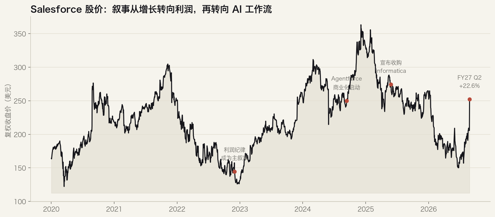
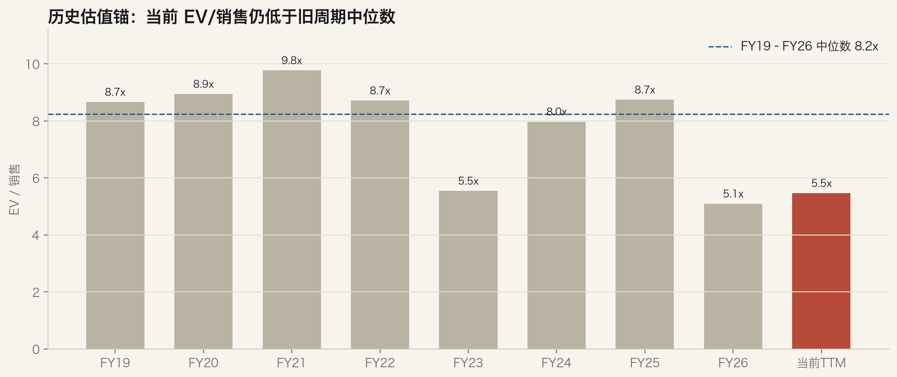
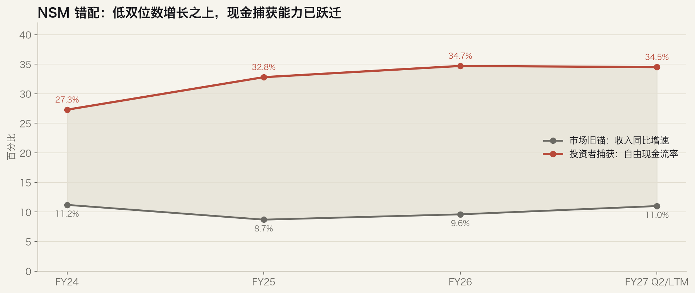

Ticker: CRM / NYSE
Date: 2026-08-28
Cut-off: 2026-08-28 14:50 CST
Classification: 有条件进入下一阶段研究
Salesforce Situation Report
1. Executive View
结论：CRM 值得进入下一阶段研究，但不是追逐 22.6% 财报跳空，而是验证市场是否仍用“低个位数有机增长的成熟 SaaS”给它定价，忽略了数据、权限和工作流正在成为企业 AI 代理的执行底座。
最重要的变化：FY27 Q2 Agentforce ARR 达 15 亿美元、同比 +240%；客户当季产生 32 亿次 Agent Work Units、环比 +97%；新增约 2,000 个付费生产客户、环比 +70%，50% 预订来自 Flex Credits 充值。它首次给出了“试点 → 生产 → 消耗 → 再购买”的闭环，而不只是订单叙事。[3]
最重要的未证实点：管理层没有披露 Agentforce 对集团有机收入的净增量；FY27 指引上调中只有约 1 亿美元来自有机改善，约 2 亿美元来自待完成的 Contentful 与 Fin 收购。Bernstein 估算剔除并购后 Q3 有机固定汇率增长仍仅约 6–7%。[4][5]
这是一种有条件的健康滞后：产品 NSM 和价值捕获 NSM 已出现方向一致的证据，但市场在财报后迅速重估，当前共识目标价 267 美元相对 252.05 美元只剩约 6% 上行。机会必须来自未来 2–3 年的估值框架切换，而不是卖方目标价的小幅追赶。[1]
2. Source Freshness Check
| 信息流 | 最新材料 | 新鲜度 | 主要限制 |
|---|---|---|---|
| 卖方 / 高盛 | 2026-08-28 GS；2026-08-27 Bernstein | 当前 | 目标价已反映财报后跳涨；估值口径分歧大 |
| 电话会 | FY27 Q2，2026-08-26 | 当前 | 生产、消耗及 AOV 多为管理层定义，缺少持续队列 |
| SEC | 10-Q，2026-08-27 | 当前 | Agentforce/数据业务未单独列报收入或利润 |
| 买方 / 渠道 | 2026-02 渠道检查；2025 年多篇专题 | 有用但偏旧 | 样本有限，主要来自 Fundaai；不可视为公司事实 |
| 播客 / 深度讨论 | 2026-08-28 检索 | 当前检索 | 15 期中管理层/生态叙事占多数，独立竞争视角不足 |
| 技术面 | 截至 2026-08-27 的 30 个交易日 | 当前 | 财报跳空使短期指标严重超买 |
3. Current Snapshot
| 指标 | 当前值 | 为何重要 |
|---|---|---|
| FY27 Q2 收入 | $11.35bn / +11% | 高于指引上限；仍需区分有机与并购贡献 |
| cRPO | $33.5bn / +14% cc | 市场当前最可信的增长先行锚；Q3 指引仍为 +14% |
| Agentforce ARR | $1.5bn / +240% | 增长快但只约相当于 FY27 收入指引的 3%；不能单独证明集团再加速 |
| AI + Data ARR | 约 $3.9bn / +210% | 显示数据层与代理层共同扩张；需防止并购归因夸大有机趋势 |
| Q2 GAAP / non-GAAP 经营利润率 | 20.5% / 34.1% | 价值捕获已显著改善；利润纪律是估值下限的重要支撑 |
| FY26 FCF | $14.40bn / 34.7% | 较 FY24 的 27.3% 显著跃升；但 FY27 指引只增长约 4–5% |
| 流通股变化 | 819m 当前在外股 | $25bn ASR 初始交付约 103m 股；回购价格有利，但以举债及现金支持，需看净债务 |
技术面财报后收盘价高于 EMA50 约 34%，RSI 约 80，成交量为此前 29 日均量的 4.4 倍，MACD 柱显著扩张。趋势确认很强，但短期追价的均值回归风险也很高。[10]
4. Valuation Framing & Peer Benchmarking
Pricing Anchor & Embedded Expectations
市场现有锚并不统一：高盛用 SNTM GAAP 净利润的 24x P/E，目标价 271 美元；Bernstein 用 FY27 调整后 P/E 12x，目标价 195 美元。倍数差一倍，反映的不是小数点误差，而是对 Salesforce 经济制度的根本分歧——是有 AI 再加速可能、现金流强的复合增长平台，还是依赖并购维持中双位数 cRPO 的成熟软件资产。[4][5]
当前 5.46x TTM EV/销售与 SAP 基本相同，高于 Adobe、显著低于 ServiceNow 和 Microsoft；15.83x TTM EV/FCF 则明显低于除 Adobe 外的比较组。市场已经给予现金流质量信用，却尚未给 Agentforce 类似 ServiceNow 的成长溢价。[1]
Peer Benchmarking
| 公司 | TTM EV/销售 | TTM EV/FCF | FCF 收益率 | SBC/收入 | 解读 |
|---|---|---|---|---|---|
| Salesforce | 5.46x | 15.83x | 7.34% | 8.34% | 估值接近 SAP；现金流便宜，但增长身份未恢复 |
| ServiceNow | 10.12x | 32.55x | 3.20% | 14.83% | 更强增长与工作流平台溢价 |
| SAP | 5.46x | 23.90x | 3.98% | 3.92% | 成熟企业系统、云迁移与 AI 再定价参照 |
| Microsoft | 11.63x | 57.60x | 1.79% | 3.74% | 企业入口与 AI 分发优势；高资本开支压低当前 FCF |
| Adobe | 4.65x | 11.02x | 9.25% | 8.05% | AI 替代担忧下的低估值反例 |
Historical Context & Charts

价格数据：Yahoo Finance；事件日期来自公司披露与新闻材料。8/27 跳涨已经提前消化一部分“AI 不会杀死应用软件”的反叙事。

FMP 历史年度关键指标与当前 TTM。年度倍数受期末股价影响，只用于制度切换的粗框架，不是精确目标价。

收入增速来自 SEC/FMP；FCF 率为经营现金流减资本开支后除以收入。FY27 点混合使用 Q2 收入同比与 TTM FCF 率，仅用于展示市场旧锚与价值捕获的方向差。
North Star Metrics Framework
| 层级 | 核心指标 |
|---|---|
| CEO NSM | 受权限约束、端到端成功完成的代理工作量：生产账户数、稳定消耗的 Agents、AWUs、自动解决率及人工交接质量。32 亿 AWUs 与 64% 内部客服自主解决率是初步代理。 |
| 长期投资者 NSM | 代理驱动的净新增 AOV / 客户扩张及其单位经济：Data 360 接入 → 生产 → 充值/高级版升级 → 续约扩张 → FCF。关键是净增量，而非把旧席位收入重新贴上 AI 标签。 |
| 市场共识 NSM | cRPO 与剔除并购后的有机订阅增速，辅以 Agentforce ARR。市场要看到 AI 指标最终进入集团收入，而不只看高速的小基数 ARR。 |
| 错配类型 | 有条件的健康滞后。产品使用与价值捕获链开始贯通，市场仍要求有机加速证明；若 Q3/Q4 只靠并购，错配将转为叙事陷阱。 |
Value Creation → Value Capture Chain
可信客户数据与权限 → 代理在销售/服务工作流完成任务 → 跨团队与跨云依赖 → 高级套装或 Flex Credits 消耗 → 充值与更高 AOV → 低流失、利润率及每股 FCF。
链条的薄弱环节位于“生产使用 → 集团净新增收入”：渠道材料既有教材出版商分流 40–45%、大银行 ACV 扩张等正例，也有部署周期长、账单透明度不足、旧席位迁移压低经常性收入的反例。IGB 样本有限，必须由未来公司队列和客户核查确认。[7]
Upside/Downside Asymmetry
以下是研究框架，不是目标价。以 FMP FY28 收入共识约 506.96 亿美元、当前企业价值与市值差额约 334 亿美元作为净债务/其他调整代理、在外股 8.19 亿股估算：
| 情景 | FY28 EV/销售 | 隐含股价 | 相对 $252.05 | 必须发生什么 |
|---|---|---|---|---|
| 熊 | 4.0x | 约 $207 | -18% | 有机增长停留 6–8%，Agentforce 主要替代旧席位；并购与债务压低回报 |
| 基准 | 5.5x | 约 $300 | +19% | cRPO 维持约 14%，利润率稳定，AI 只提供渐进式附加销售 |
| 牛 | 6.5x | 约 $362 | +43% | FY28 有机增长进入低双位数、Agentforce 扩张可见，市场认可工作流平台而非成熟 SaaS 锚 |
敏感性很高：收购完成、债务、回购最终交付与 FY28 共识变化都会改变每股价值。高盛 271 美元和 Bernstein 195 美元的现行目标价都低于上述基准/牛案，说明上行必须来自结构性重估。
5. SitRep Judgment
1 — Wrong anchor：通过但未完全证明。市场仍用有机 cRPO/订阅增速判断 CRM，而产品经济正在转向数据、权限、代理用量与结果定价。Agentforce 的生产、消耗、充值和高级版升级数据使“市场锚错了”成为可信假设；但当前尚未披露足够的净新增收入与毛利。
2 — Material upside：在牛案下通过。财报后共识目标价只剩个位数上行，基准案约 19% 不足以单独构成结构性错价；若 AI 将有机增长拉回低双位数并支持 6.5x FY28 EV/销售，约 43% 上行才足以影响组合决策。相反，4.0x 成熟软件锚对应约 18% 下行。
3 — Clear validation path：通过。未来两个季度可观察 cRPO、有机收入、付费生产账户、AWU/充值、Agentforce 高级版升级、Data 360 独立消耗、流失率与 FY28 框架；验证窗口集中且可证伪。
因此，下一阶段研究应以拆解 AI 的净新增单位经济为唯一核心问题。若无法把 Agentforce ARR 与集团有机增长连接起来，应降级为“高质量现金流/回购型成熟软件”，而非 AI 结构性错价。
6. What Would Confirm Or Break The Thesis
Confirming Datapoints
- Q3/Q4 剔除 Informatica、Contentful、Fin 后的有机订阅增速明显超过 8%，cRPO 在固定汇率下维持或超过 14%。
- 生产账户与“持续消耗 Agents”继续环比扩张，Flex Credits 充值占比不低于 Q2 的 50%，AWUs 增长最终进入净新增 AOV。
- Data 360 独立消耗/净扩张与 Agentforce 同步改善，证明数据层不是会计归因，而是工作流依赖。
- 高级 Agentforce 套装渗透率从高盛所称约 5% 向上，实际 ACV uplift 接近 60–80%，同时流失率保持低位。
- FY28 框架显示有机低双位数增长、稳定或扩张的 non-GAAP 利润率以及持续每股 FCF 增长。
Breaking Datapoints
- Agentforce ARR 继续高速增长，但核心 CRM 有机增速停留 6–8%，说明 AI 主要是重分类或席位迁移。
- 生产账户增长不再转化为充值，AWU 单位毛利恶化，或结果定价迫使 Salesforce 承担过多推理成本。
- Data 360 独立增长继续落后，第三方模型/入口控制客户体验，Salesforce 被压缩为低议价的数据记录层。
- 许可、集成和分析波动扩大；Fin/Contentful/Informatica 整合导致运营费用、净债务或客户复杂度上升。
- 高额回购之后每股 FCF 不增长，SBC 仍约占收入 8%，资本回报更多是财务工程而非经济改善。
7. Recommended Next Diligence
- 建立有机增长桥：从 FY26 到 FY28 按核心 Salesforce、Informatica、Fin、Contentful 拆分收入、cRPO 与利润贡献；复现 Bernstein 的 6–7% 有机 Q3 估算。
- 做 Agentforce cohort 模型：试点 → 付费生产 → 稳定消耗 → 充值/高级版升级，估算 AWU、Flex Credits、结果定价三种模式的收入与毛利。
- 客户核查：至少覆盖 Service、Sales、Slack 和 Data 360 各 3–5 个客户，询问上线周期、解决率、人工回退、旧席位迁移、隐含推理成本与预算来源。
- 入口风险地图：验证 Claudeforce/headless 模式中谁控制用户界面、语义层、权限与计费；比较 Microsoft Copilot、ServiceNow、Anthropic 直连方案。
- 资本配置模型：纳入 $25bn ASR、$6bn 新债、Informatica/Fin/Contentful 交易与 SBC，使用每股 FCF 而非总 FCF 判断回购创造价值。
Sources Used
- FMP：CRM 实时报价、公司资料、市值、在外股、分析师共识、财务报表、关键指标与同业指标；检索日 2026-08-28。FMP 为标准化数据源，部分 TTM/EV 字段口径需在下一阶段与原始申报勾稽。
- SEC / EdgarTools：FY27 Q2 Form 10-Q，2026-08-27；FY26 Form 10-K，2026-03-02。本地提取：10-Q、10-K、财务快照。
- 电话会：Salesforce FY27 Q2 earnings call transcript，FMP search-transcripts，2026-08-26。
- Goldman Sachs：Salesforce 2QFY27 report，Buy，目标价 271 美元，2026-08-28；Marquee 核验并下载 分析师模型 与 Quantum 标准财务。Marquee PDF 控件未生成下载，网页事实与跨行存档 Markdown 相互核验。
- Bernstein：Salesforce 2Q27 report，Underperform，目标价 195 美元，2026-08-27。
- Deutsche Bank：Salesforce outcome-pricing note，Buy，2026-06-26。
- IGB 买方/渠道：6 篇全文材料，主要为 Fundaai 2025–2026 渠道检查、Clouded Judgement 与 Stratechery；精确证据日志位于 temp/igb-content。
- Podwise：Salesforce Agentforce / Data Cloud 跨播客研究，15 期节目，检索日 2026-08-28。
- FreshRSS 新闻：CNBC FY27 Q2、Claudeforce 合作、管理层调整，全文均已核验。
- 技术面：yfinance 30 个交易日价格与成交量，MACD/RSI/EMA/布林带；数据截至 2026-08-27，本地文件 temp/crm_technical_30d.csv。
证据置信度：高（公司财务、SEC、电话会、当前市场数据）；中等（卖方估值与共识）；中低（渠道与播客独立性）。承销状态：Preliminary initiation underwrite。主要未决冲突：Agentforce 高速指标与集团有机增速之间的桥接；并购对 cRPO、净债务和利润率的真实贡献。